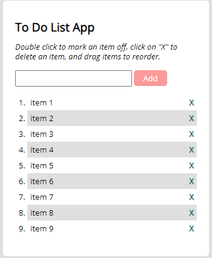

My Projects
Pokemon App

In this project, I developed the "Pokemon App," a JavaScript-based web application for users to explore the Pokémon database. By fetching data from the external Pokémon API, users can view information about each Pokémon. Using HTML, CSS, JavaScript, external APIs (Pokémon API).
See projectMeet-app
The Meet app is a serverless, React-based PWA developed with TDD techniques. It aims to help users discover and manage upcoming events by integrating with the Google Calendar API, providing a user-friendly interface for schedule management.
Technologies used: React, Google Calendar API, AWS Lambda, Serverless, TDD, PWA features.
See projectMy Flix
Welcome to MyFlix, a MERN stack application that allows users to explore a collection of movies, manage their favorite movies, and update their user profile.
See projectMovie API
This project is a movie API built with Node.js, Express.js, and MongoDB. It allows users to access a collection of movies, store user data (including favorite films), and implements JWT authentication for secure user sessions.
See projectScrabbleWord
In this project, I developed a web application that is a mini game to guess scrabble words. The game was developed using JavaScript, HTML, and CSS.
See projectDice-Dice
In this project, is a simple dices game developed using JavaScript, HTML, and CSS.
See projectToDo List App
In this project, I developed the "To-Do List App," a web application crafted to streamline users' task management. It offers a user-friendly interface for adding, deleting, and marking tasks as completed.
Technologies used: HTML5, CSS, JavaScript, jQuery, jQuery UI.
See project